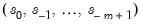
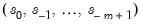

EViews offers two methods of performing exponential smoothing: simple exponential smoothing based on older ad hoc methods, and exponential smoothing based on the Error-Trend-Seasonal likelihood framework of Hyndman, Koehler,
et al. (2002).
To estimate the parameter, type the letter e (for estimate) in the edit field. EViews estimates the parameters by minimizing the sum of squared errors. Don't be surprised if the estimated damping parameters are close to one—it is a sign that the series is close to a random walk, where the most recent value is the best estimate of future values.
where is the damping (or
smoothing) factor. The smaller is the

, the smoother is the

series. By repeated substitution, we can rewrite the recursion as
where  and
and  are the permanent component and trend as defined above in Equation (11.60)
are the permanent component and trend as defined above in Equation (11.60) and

are the additive seasonal factors. The three coefficients are defined by the following recursions:
It is worth noting that Holt-Winters—No Seasonal, is not the same as additive or multiplicative with

. The condition

only restricts the seasonal factors from changing over time so there are still (fixed) nonzero seasonal factors in the forecasts.
When you click OK, EViews displays the results of the smoothing procedure. The first part displays the estimated (or specified) parameter values, the sum of squared residuals, the root mean squared error of the forecast. The zero values for Beta and Gamma in this example mean that the trend and seasonal components are estimated as fixed and not changing.
Although ad hoc exponential smoothing (ES) methods have been employed for many decades, recent methodological developments have embedded these models in a modern dynamic nonlinear model framework (see Chatfield,
et al. 2001 for a brief historical overview).
Hyndman, Koehler, et al. (2002) outline the ETS (
Error-
Trend-
Seasonal or
Exponen
Tial
Smoothing) framework which defines an extended class of ES methods and offers a theoretical foundation for analysis of these models using state-space based likelihood calculations, with support for model selection and calculation of forecast standard errors.
Notably, the ETS framework encompasses the standard ES models (e.g., Holt and Holt–Winters additive and multiplicative methods), so that it provides a theoretical foundation for what was previously a collection of
ad hoc approaches.
Substituting for  and
and  in Equation (11.75)
in Equation (11.75), we have an updating equation in error correction form:
Traditionally, the initial state values are specified using ad hoc values. The ETS approach allows for either the use of these experimental values, or estimation of the initial states as part of the optimization problem. Even when the initial states are estimated, it is useful to use
ad hoc values as a starting point for optimization.
Following Hyndman, et al. (2002) EViews uses the following
ad hoc method for computing the initial states or starting values for the estimated initial states:
where are the maximized values and p is the number of parameters in plus the number of the estimated initial states in . The model that minimizes the AIC (BIC, or HQ) across all available models is adopted.
You may use the section of the dialog to specify the type of ETS model you wish to use for smoothing. There is one dropdown menu for each part of the decomposition. By default, EViews employs the additive error, no trend, and no seasonal (A, N, N) model.
In addition to the component choices outlined in “ETS Decomposition” (N, A, AD,
etc.), EViews offers you an choice so you may specify that the component specification will be chosen using model selection techniques.
For the calculational efficiency, EViews provides two options to reduce the number of available ETS smoothing models. The checkbox lets you choose from models with additive trend and seasonal components only. The checkbox lets you exclude models for which the estimation procedure did not converge from model comparison.
If you have specified a seasonal component or elected to select the seasonal specification using model selection, the edit field lets you specify the
m length of seasonality. The default cycle setting will depend on the workfile structure (4 for quarterly, 12 for monthly, 2 for all others).
When you choose for any of the component types, EViews displays options which let you specify the model selection procedure. You may choose between minimizing one of the information criteria (, , ) or finding the model with the best within sample one-step predictive forecast by minimizing the .
The section of the dialog lets you specify fixed values for the smoothing parameters in your model. If you enter a numeric value in one of the edit fields, EViews will fix the parameter at that value and remove it from the set of parameters to be estimated. Leaving a field blank instructs EViews to estimate the parameter.
The section consists of two settings: the estimation sample, and the forecast end point.
The edit field identifies the contiguous sample that will be used for estimation of the smoothing model. You should enter a single date pair. Note that the ETS procedure does not allow for missing values in the source series.
The lets you specify the end point of your forecast sample. Note that the forecast start point is fixed as the first observation after the estimation sample. For example, if the estimation sample is given as “1985m01 1991m12” and the forecast end point is given as “1992m04”, then EViews will perform exponential smoothing analysis for the estimation sample and forecast the remaining periods (
i.e. “1992m01 1992m04”).
The section allows you to specify the optimization objective function, maximum iterations and convergence, and starting values, and to indicate whether you wish to treat the initial state values as parameters or to use the
ad hoc method for computing the initial states.
The section provides options for showing the results of the ETS procedure in graph or table form.
The top portion of the section lets you specify the display of the component results in single or multiple graphs. If you select , EViews will display the selected , , , and components in separate graphs. If you select , all of the selected components will be included in a single graph.
If the ETS specification in the page of the dialog (
“ETS specification”) contains any automatically chosen components, EViews will offer you the option of displaying a graph or table of the forecast and likelihood values used to forecast and/or likelihood values used in the model selection procedure. Simply select the appropriate Graph or Table checkbox to include a component. The results will be displayed along with the estimation results.
The section of the tab lets you specify the smoothing process output series names. By default EViews will create a new series in the workfile with the final smoothed (and possibly forecasted) series. The name of the created series will be the same as the original series name, with an “_SM” appended to the end. You can change this name using the edit field.
Change the drop-down menus to (M, A, M), set the to “1959 1984” or “1959m01 1984m12”, set the t to “1988m04”, and leave the remaining settings at their default values. When you click
OK, EViews estimates the ETS model, displays the results, and saves the smoothed results in the HS_SM series in the workfile.
Next, click on the tab and set the options to show the forecast and all of the elements of the decomposition in Multiple graphs, and to produce graphs and tables for the forecast and likelihood comparisons of all of the models considered by the model selection procedure.
Click on OK to perform the smoothing. Since EViews will be producing several types of output for the procedure, the results will be displayed in a spool:
The contains the specification, estimated smoothing and initial parameters, and summary statistics. The top portion of the output,


are the damping factors and
is the seasonal frequency specified in the Cycle for Seasonal field box.
are the damping factors and
is the seasonal frequency specified in the Cycle for Seasonal field box.
may itself be decomposed into a level term (
) and a growth term (
) in several ways. Following Hyndman, et al. (2008) we let
be the trend forecast
periods out, and let be a damping parameter. The five different trend types corresponding to different assumptions about the growth term are given by:


. For seasonal data, compute a linear trend using linear regression on the first ten seasonally adjusted values against a time series. And then set the initial level to be the intercept of the trend.
to be the slope of the trend. For multiplicative trends, set where
and
denote the intercept and slope of the fitted trend, respectively.
for multiplicative seasonality.
,
, and
using the Broyden, Fletcher, Goldfarb and Shanno (BFGS) algorithm.
 of
of  is computed recursively, by evaluating:
is computed recursively, by evaluating: is a weighted average of the past values of
is a weighted average of the past values of  , where the weights decline exponentially with time.
, where the weights decline exponentially with time.  is the end of the estimation sample.
is the end of the estimation sample. and a value for
and a value for  . EViews uses the mean of the initial observations of
. EViews uses the mean of the initial observations of  to start the recursion (where
to start the recursion (where  is the number of observations in the sample). Bowerman and O’Connell (1979) suggest that values of
is the number of observations in the sample). Bowerman and O’Connell (1979) suggest that values of  around 0.01 to 0.30 work quite well. You can also let EViews estimate
around 0.01 to 0.30 work quite well. You can also let EViews estimate  to minimize the sum of squares of one-step forecast errors.
to minimize the sum of squares of one-step forecast errors. is defined by the recursions:
is defined by the recursions: is the single smoothed series and
is the single smoothed series and  is the double smoothed series. Note that double smoothing is a single parameter smoothing method with damping factor
is the double smoothed series. Note that double smoothing is a single parameter smoothing method with damping factor  .
.  and slope .
and slope .  is given by,
is given by, estimates.
estimates. estimates.
estimates.  and
and  are the permanent component and trend as defined above in
are the permanent component and trend as defined above in  , and trend at the end of the estimation sample that are used for post-sample smoothed forecasts.
, and trend at the end of the estimation sample that are used for post-sample smoothed forecasts. 
 may be decomposed into three components, trend (T), seasonal (S), and error (E), where the trend term characterizes the long-term movement of
may be decomposed into three components, trend (T), seasonal (S), and error (E), where the trend term characterizes the long-term movement of  , the seasonal term corresponds to a pattern with known periodicity, and the error term is the irregular, unpredictable component of the series.
, the seasonal term corresponds to a pattern with known periodicity, and the error term is the irregular, unpredictable component of the series. ) which is always present, and a growth term (
) which is always present, and a growth term ( ) which may or may be present, depending on the trend specification. If we let
) which may or may be present, depending on the trend specification. If we let  represent included seasonal terms, we may define the general following
represent included seasonal terms, we may define the general following  -dimensional state vector:
-dimensional state vector: and
and  are known continuous scalar functions,
are known continuous scalar functions,  and
and  are known continuously functions with continuous derivatives from and where
are known continuously functions with continuous derivatives from and where  independent of past realizations of
independent of past realizations of  and
and  .
. equation represents how the various state variable components are combined to express the series in terms of a smoothed forecast and the prediction error
equation represents how the various state variable components are combined to express the series in terms of a smoothed forecast and the prediction error  . The multiple functions are a notational device for writing the additive and multiplicative errors in compact form. With additive errors we have so that
. The multiple functions are a notational device for writing the additive and multiplicative errors in compact form. With additive errors we have so that . For the ETS models considered here, we may think of the updating smoothing equations as being weighted averages of a term which depends on the current prediction error (and prior states), and one which depends on the prior states. The resulting state equations are extended versions of those outlined by Hyndman,
. For the ETS models considered here, we may think of the updating smoothing equations as being weighted averages of a term which depends on the current prediction error (and prior states), and one which depends on the prior states. The resulting state equations are extended versions of those outlined by Hyndman,  are functions of the prediction error and lagged states, and is a function of the lagged states. is the damping parameter for linear trend models and is the damping parameter for multiplicative trend models. In the absence of a damping, the parameters are set to 1.
are functions of the prediction error and lagged states, and is a function of the lagged states. is the damping parameter for linear trend models and is the damping parameter for multiplicative trend models. In the absence of a damping, the parameters are set to 1. since we have an additive trend specification with no seasonal component.
since we have an additive trend specification with no seasonal component. ). Define the state vector . The one-period ahead forecast is
). Define the state vector . The one-period ahead forecast is and let
and let  be the one-period ahead forecast of
be the one-period ahead forecast of  . Then the prediction error decomposition is
. Then the prediction error decomposition is  , nor the initial seasonal states . We will use
, nor the initial seasonal states . We will use  and
and  to refer to the relevant subsets for a given model which are to be estimated.
to refer to the relevant subsets for a given model which are to be estimated. . The traditional approach has assigned the following restrictions on the parameters to ensure model stability:
. The traditional approach has assigned the following restrictions on the parameters to ensure model stability:  and, optionally, the initial states
and, optionally, the initial states  .
. -step forecasts of the specified ETS model.
-step forecasts of the specified ETS model. -step ahead forecast error is defined as
-step ahead forecast error is defined as -step forecasts is defined as
-step forecasts is defined as and using BFGS.
and using BFGS. -step ahead forecasts are
-step ahead forecasts are and
and  , which indicate that the seasonal and trend components do not change from their initial values.
, which indicate that the seasonal and trend components do not change from their initial values.